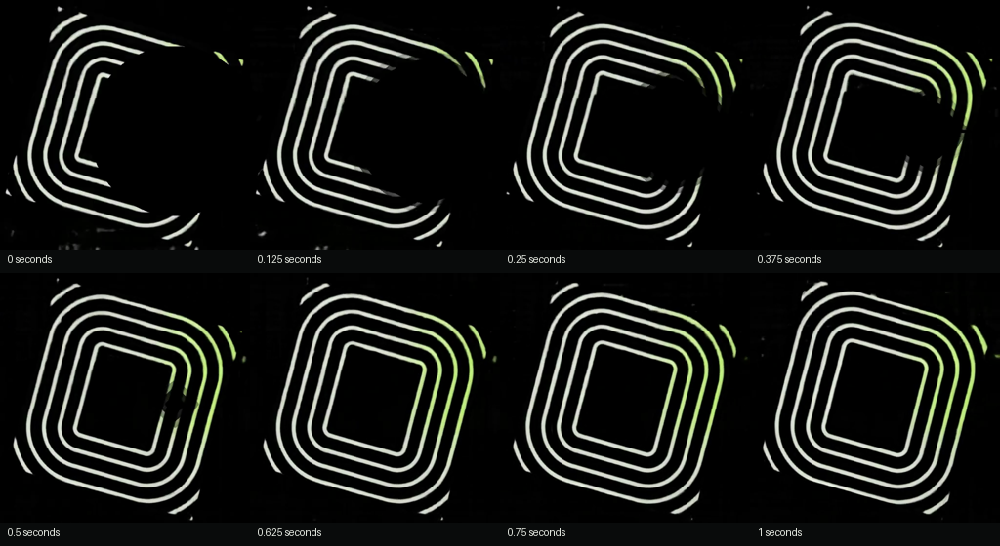
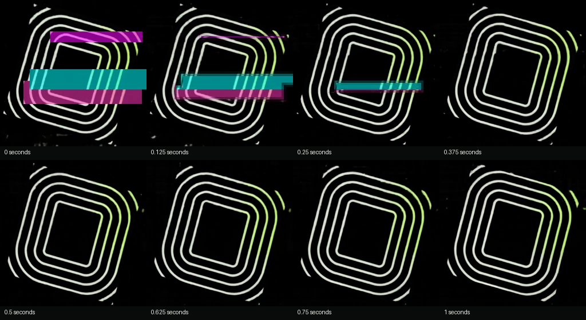

Trained neural cellular automata · native 512 × 512
Twice the original pace.
A four-second cycle, compared with the original eight-second shader preview.
Each eight-second clip shows two complete cycles. Recovery keeps its own timing.
The retrained loop at the corrected pace.
A large black circle rebuilds from its surviving rim toward its core.
Pink, cyan and magenta damage with gradual repair.
Brightness and hidden-state beat kick with quick recovery. No audio input.
Teacher and other distortions
The four-second training teacher.
RGB splitting.
Horizontal tears.
Inspect the first second of rebuilding


The local repair rule uses a supervised growth prior. Clips show raw NCA RGB;
there is no video crossfade.
Model and reproduction ·
Training and validation ·
Teacher / clean / blackout / glitch comparison